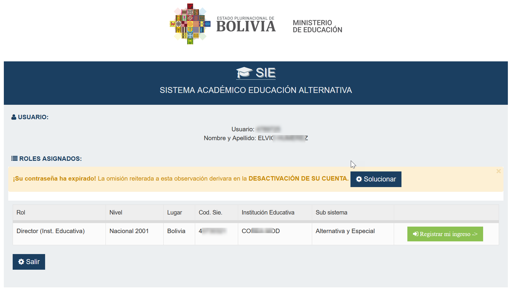
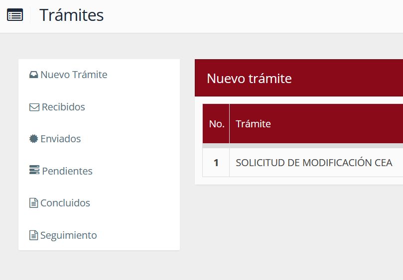
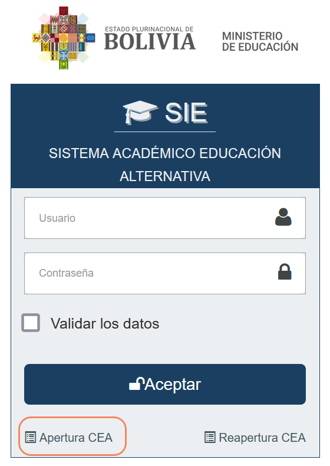
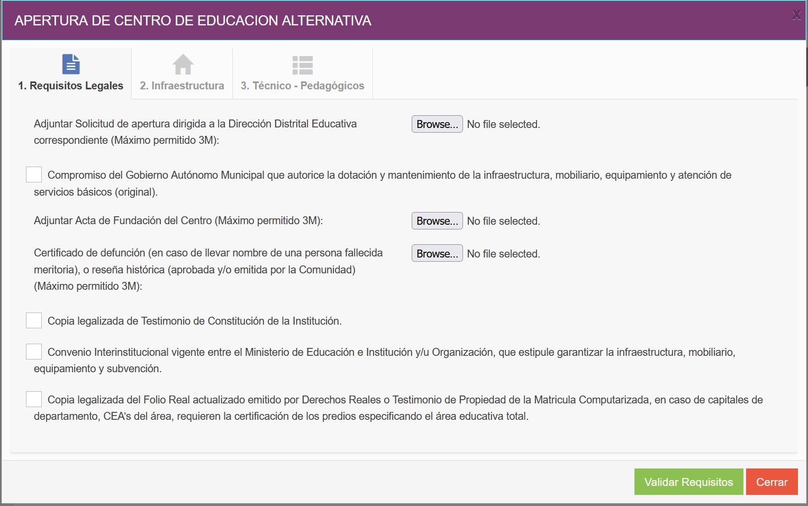
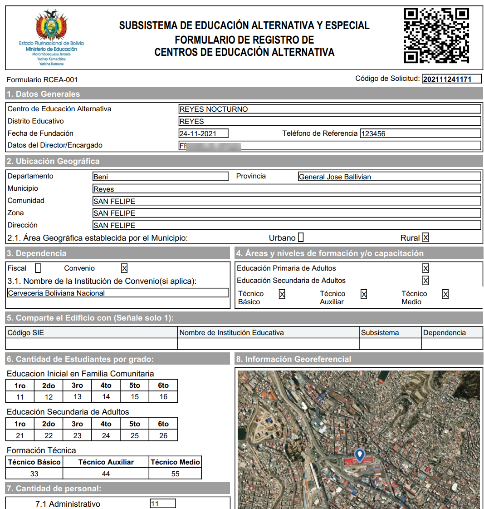

Ingrese con las credenciales de acceso proporcionados.
Seguidamente el sistema le mostrará un listado de opciones que tiene asignado su Usuario.
Haga clic en el botón "Registrar mi ingreso".
Al hacer clic en "Trámites", se desplegará la pantalla de tramites con una lista de opciones.
Nuevo Trámite: Muestra una lista de los diferentes tramites disponibles según la tuición de cada usuario.
Recibidos: Muestra una lista de los diferentes tramites recibidos según la tuición de cada usuario.
Enviados: Muestra una lista de los tramites enviados con opción de imprimir formulario de envío si corresponde.
Concluidos: Muestra una lista de los trámites concluidos.
Seguimiento: Muestra un panel de búsqueda de trámite para hacer el seguimiento correspondiente.
Haga clic en "Apertura CEA".
Se desplegará el formulario RCEA-001 para el Registro de nuevo Centro de Educación Alternativa.
Completar todos los datos solicitados de las pestañas "Datos generales", "Ubicación Geográfica", "Dependencia Nivel", "Cantidad de estudiantes", "Cantidad de personal" e "Información Georeferencial".
Presione el boton "Adicionar requisitos" para completar los requisitos solicitados.
Complete todos los datos solicitados de las pestañas "Requisitos Legales", "Requisitos de Infraestructura" y "Requisitos Técnico - Pedagógicos". Presione el botón "Validar Requisitos", debe aparecer un mensaje confirmando que fueron validados.
Finalmente presione el botón "Enviar formulario" para guardar y enviar los datos. Si el proceso fué exitoso el sistema desplegará el formulario RCEA-001 en formato PDF.
2021 © Ministerio de Educación Estado Plurinacional de Bolivia.